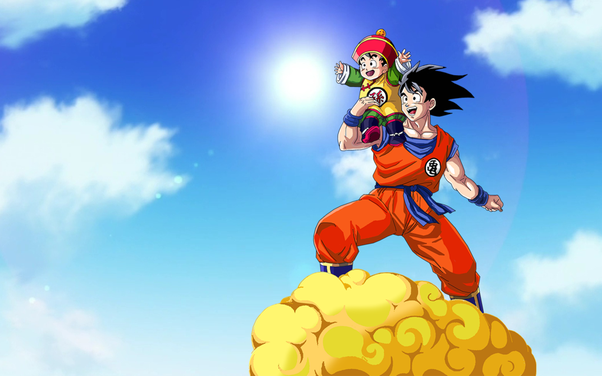

Overview
Dragon Ball Z Kakarot is a semi-open world action role playing game that follows the anime story of the Saiyan Goku and his friends.In this game, you follow his story, and go through each of the anime saga's, fighting the villains, collecting dragon balls, and doing fun tasks that help you rank up and level up higher in the game. You get to play as different characters in the saga and it is really fun to experience what each character plays like.